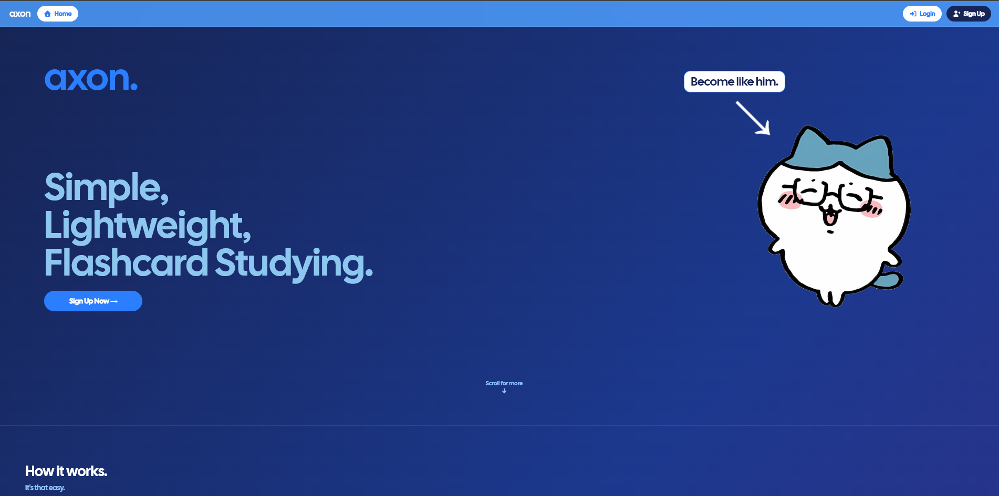
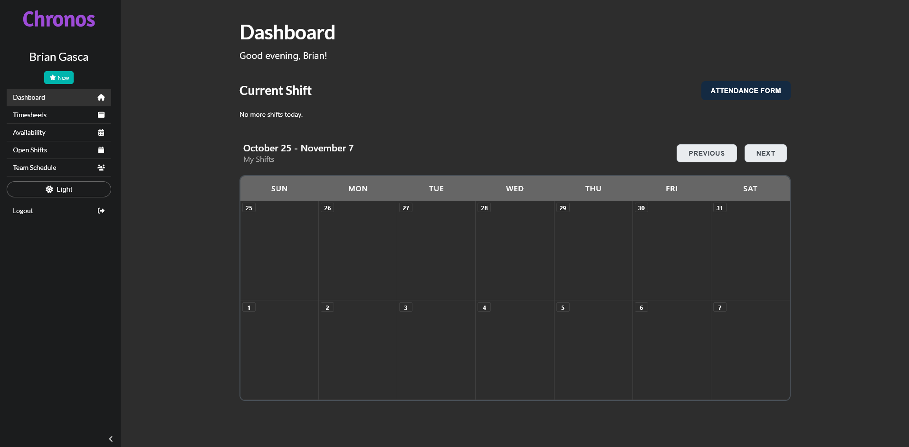

Projects
My projects include tools for studying, campus IT scheduling, and coordinating deliveries. Each entry describes what the application does, the technologies involved, and my contribution.
Axon — Flashcard Study App
January 2026 – Present
A flashcard study platform with deck creation, recall-tracked study sessions, quiz generation, and community sharing.
Technologies: React, Node.js, Express, MySQL, Tailwind CSS, JWT
My contribution
- Built and deployed the full-stack application with a React/Vite frontend and Express API.
- Implemented JWT authentication and a normalized MySQL database schema.
- Set up GitHub Actions to run lint and automated tests on pull requests, with branch protection and deployment to Railway on merge.

Chronos — Service Desk Scheduling
June 2025 – January 2026
A scheduling and timesheet application used by campus IT employees to manage their work schedules and submit timesheets.
Technologies: React, Node.js, Express, MariaDB
My contribution
- Shipped the application for daily use by more than 70 IT employees.
- Developed a responsive React frontend with dynamic tables, role-based views, and API-driven updates.

A campus delivery platform that coordinates deliverers and provides real-time, map-based order tracking.
Technologies: React, Express, MariaDB, Discord bot integration
My contribution
- Led development through ACM UCSD, mentoring six developers with code reviews and technical direction.
- Integrated a Discord bot and real-time order tracking to coordinate deliveries.